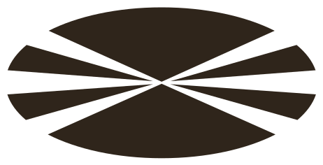

Máster interuniversitario de 60 ECTS que imparten la Universidade da Coruña y la Universidade de Santiago de Compostela junto con el Centro de Supercomputación de Galicia. Las prácticas se hacen sobre Finisterrae, el supercomputador del CESGA.
Ficha técnica
Stack
C/C++OpenMPMPICUDA y GPUArquitecturas heterogéneasClústeres y supercomputaciónOptimización y perfilado de códigoHPC en la nube
Qué estudio
Obligatorias de arquitecturas de altas prestaciones, programación paralela, programación de arquitecturas heterogéneas e infraestructuras de altas prestaciones. Optativas de herramientas para HPC, HPC en la nube, programación paralela avanzada y análisis de datos con HPC.
Formato
60 ECTS en dos semestres, con prácticas profesionales (6 ECTS) y trabajo fin de máster (15 ECTS).
May 2026 - Jul 2026
Desarrollador freelance· SGAR
Desarrollé SGAR, una aplicación para una farmacia que automatiza la gestión de recetas electrónicas. Hasta entonces el proceso era manual: descargar dos documentos por paciente del portal público de receta electrónica y cotejarlos a mano contra una hoja de cálculo.
Ficha técnica
Stack
PythonFastAPISQLiteJavaScriptAutomatización de navegador (RPA)Extracción de datos de PDF
Qué hice
Dos módulos independientes que se comunican por ficheros y una base de datos local. Uno automatiza la descarga de los documentos del portal; el otro los procesa, los cruza con el catálogo de equivalencias y con el stock, y los presenta en una aplicación web con calendario de dispensaciones.
Protección de datos
Son datos médicos: los registros guardan códigos de paciente y no nombres, y toda dispensación la valida el farmacéutico.
Hice de enlace entre Inditex Tech y el entorno universitario: recibí formación por parte de Inditex y busqué eventos y workshops en los que la empresa pudiera participar.
Ficha técnica
Qué hice
Formaciones impartidas por Inditex. Búsqueda de eventos, hackathons y workshops de interés para la empresa, y contacto entre los organizadores y Inditex Tech.
Stack
Sin componente técnica: es un papel de representación.
Investigación en selección de características eficiente. ReliefF captura interacciones entre variables, pero su coste crece con el cuadrado del número de instancias, lo que lo vuelve inviable en conjuntos grandes.
Dos variantes del algoritmo. Una sustituye la búsqueda exacta de vecinos por búsqueda aproximada sobre un índice vectorial; la otra reduce el conjunto de entrenamiento a un número acotado de prototipos mediante clustering.
Resultado
aquí." data-en="On datasets of millions of instances, more than two orders of magnitude of speed-up and around a third fewer emissions, with statistically equivalent selection quality. MIT-licensed code, thesis available here.">En conjuntos de millones de instancias, más de dos órdenes de magnitud de aceleración y alrededor de un tercio menos de emisiones, con una calidad de selección estadísticamente equivalente. Código bajo licencia MIT y memoria disponible aquí.
Prácticas en el área de inteligencia artificial, dentro de un proyecto de validación de expedientes del sector asegurador: comprobar si una imagen y la descripción que la acompaña son coherentes entre sí.
Ficha técnica
Stack
PythonPyTorchLLMs multimodales (visión y lenguaje)Embeddings de textoSimilitud semánticaGPU
Qué hice
El modelo genera una nueva descripción de la imagen con un formato fijo y se compara con la descripción original mediante embeddings. Una similitud baja señala una posible incoherencia.
Resultado
Evaluación sobre un conjunto público de imágenes de daños en vehículos, con puntuaciones por muestra y métricas agregadas.
Grado en Ciencia e Ingeniería de Datos en la Universidade da Coruña. El Trabajo Fin de Grado, sobre optimización computacional de ReliefF, se calificó con 10 y Matrícula de Honor.

Bio
Graduado en Ciencia e Ingeniería de Datos por la Universidade da Coruña. Trabajo como Data & AI Engineer en el departamento de distribución de Pull&Bear y curso el Máster en Computación de Altas Prestaciones de la UDC, la USC y el CESGA.
Me muevo por todo el ciclo del dato: procesos ETL y modelado en SQL, análisis y visualización para que los datos se puedan leer y se pueda decidir con ellos, entrenamiento y puesta en producción de modelos (Python, PyTorch, Spark, Docker, cloud) y trabajo de rendimiento (C/C++, CUDA, MPI, programación paralela y optimización de código).
Búsqueda visual de prendas sobre un catálogo de 27.000 productos: a partir de una foto devuelve los artículos más parecidos. Detección con YOLOv8, un ensemble de embeddings SigLIP-384 y DINOv2, búsqueda con FAISS y API en FastAPI. Primer premio a la Mejor IA Open Source y segundo premio del Reto Inditex-Tech en HackUDC 2026.
Portal web de predicción de estructuras proteicas con AlphaFold2 sin necesidad de conocimientos de HPC: se envía la secuencia y se obtiene la estructura en 3D, con mapas PAE y coloreada por confianza pLDDT. Sistema de cuatro agentes sobre Gemini 2.5 Flash, desplegado en Cloud Run. Segundo premio del GDG Challenge, Impacthon 2026.
Trabajo Fin de Grado, calificado con 10 y Matrícula de Honor. Búsqueda aproximada de vecinos y prototipado para que ReliefF escale a millones de instancias sin perder calidad de selección.
Clasificación de imágenes de CCTV portuario para detectar la presencia de barcos y el estado del atraque. CNN y ResNet18 con validación cruzada K-Fold estratificada, entrenado sobre imágenes reales de puerto.
Simulador de caché L1 (LRU, asociativa por conjuntos) para analizar el comportamiento de kernels de multiplicación de matrices y ver, fallo a fallo, el efecto de las estrategias de tiling.